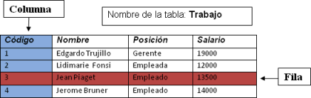

1.3. Bases de datos relacionales
Importante
Una base de datos relacional es un modelo basado en el establecimiento de relaciones entre conjuntos de datos denominados tuplas, que en la práctica se organizan en forma de tablas formadas por registros (filas) y campos (columnas).
|  |
| Tabla relacional. Imagen de elaboración propia. |
Hasta el momento, hemos hecho un recorrido por todos los aspectos que engloba el diseño y la utilización de una base de datos. Pero, las bases de datos que tendrás que crear y manipular en los siguientes temas pertenecen al modelo relacional, puesto que son las más utilizadas en la actualidad.
Las características que deben cumplir los elementos de una base de datos relacional son:
- No pueden existir dos tablas con el mismo nombre.
- No pueden existir dos registros o filas iguales. Para ello se usa un campo cuyo valor es único llamado campo clave.
- Todos los valores de una columna o campo (atributos) deben ser del mismo tipo.
Estas normas se refieren a la introducción de datos y realmente son una simplificación de las reglas enunciadas por Edgar Frank Codd en 1970.
Ventajas y descentajas de las Bases de datos relacionales
 Ventajas Ventajas |
Desventajas | |
|
|
|
Reflexiona
De estas características, tanto a favor como en contra, se pueden deducir dos afirmaciones:
- Otros modelos permiten la redundancia de datos.
- Los sistemas de información geográfica almacenan y tratan los datos de forma distinta a la organización en tablas.
Para saber más
Reglas de Codd
En este artículo puedes encontrar una explicación detallada de las reglas de Codd con ejemplos de la aplicación de cada regla: Las_12_Reglas_de_Codd